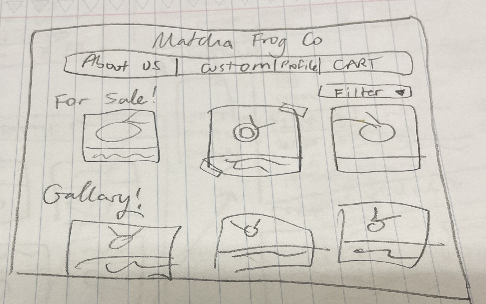
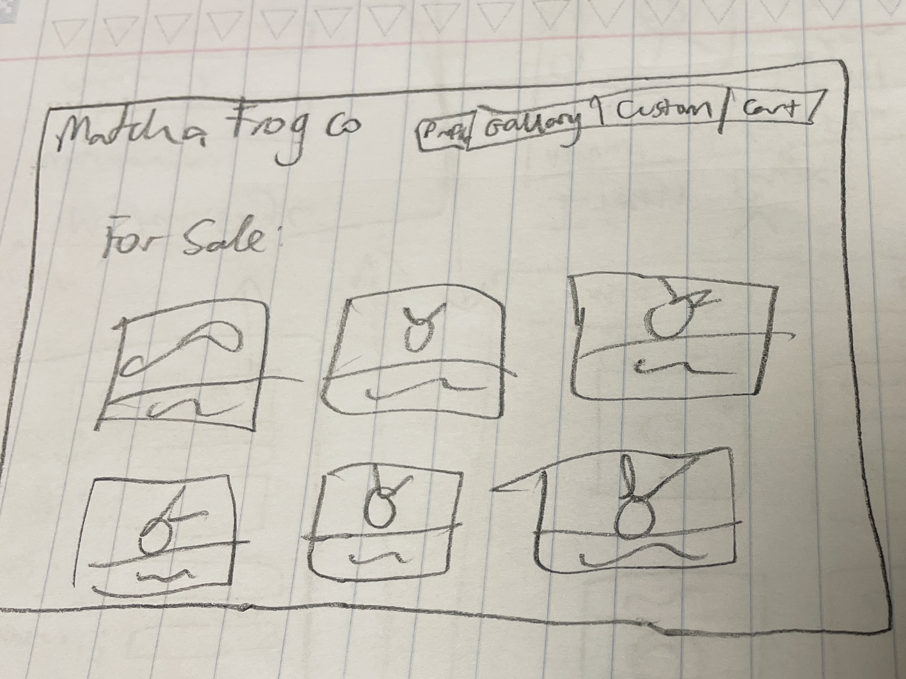
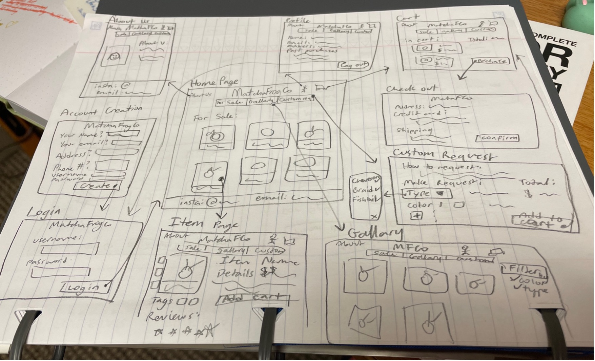
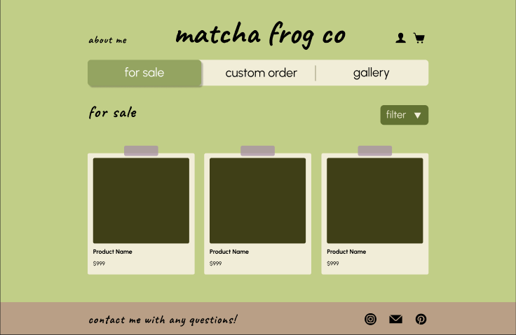

I love making embroidery bracelets in my free time. I find the process relaxing and it’s a great way to express my creativity. I show my mom what I’ve made when I’m done, and she always says something along the lines of, “Very nice! You should sell these!” Over time, I realized that selling bracelets could actually be really fun. I’ve seen sellers on Etsy making bracelets, so why couldn’t I? I created Matcha Frog Co so I could have a place to sell my bracelets, show off ones I’ve created in the past, and allow users to custom order bracelets from me.
I wrote a user story to inspire the design of Matcha Frog Co. It helped me initially think about who would be using my interface and guide my design thought process to facilitate the needs of my target users. Mia is the subject of my user story. She is a college student that enjoys listening to popular music, reading books, doing arts and crafts, and fashion. She is tech savvy and has social media to follow her friends and favorite bands/celebrities/fan accounts for popular book series she has read. She enjoys browsing online/shopping for fun in her free time or when she needs to buy gifts/items for special occasions. Dressing up in fun outfits that suit their style everyday makes her feel good, and she loves wearing accessories to go with her clothes. Her goal is to feel confident and express herself. She also enjoys talking about her interests with others and will decorate her laptop and water bottles with stickers related to music lyrics, food, or books, she enjoys. She views accessories as a way to express herself, and it sparks a bit of joy every time she looks at them. The little things mean a lot to her. Mia has recently bought tickets to see her favorite band, Bad Suns, in concert. While scrolling through Instagram one day, Mia saw a post of a seller showing off shirts with embroidered band logos. “Wow, those shirts are so unique! Plus, it’s embroidered, it looks so cool!” she exclaims. Intrigued, Mia pulls out her personal laptop and navigates to the seller’s site (my UI) to look for unique Bad Suns merch to wear at the upcoming concert.
When designing the interface, I made the ‘for sale’ page the home page, so users can easily see what is available for purchase. They also have the abillity to filter by different categories or aesthetics, such as ‘band inspired.’ I also made sure to include photos and elaborate descriptions of the bracelet so users can fully understand the product and see all of the details that make it related to a certain band or artist.
I designed Matcha Frog Co as a website so there would be enough room to display multiple bracelets at once with detailed information. It was the right choice as I expect my target audience to be doing most shopping through their computers. I expect this interface would help improve my users’ lives as it provides an opportunity for them to get a high quality handmade product that relates to their interests and helps them feel stylish. It also saves the user time. Embroidery bracelets take hours to make, so purchasing from Matcha Frog Co allows them to get a bracelet in minutes.
Before putting together a detailed prototype, I drew some sketches of my homepage to experiment with different layouts. These are what my first sketches looked like.
 Eventually I settled upon this layout of the homepage. I observed my other drawings and I thought the components looked best this way. I drew out all of the screens and interactions that I wanted to include in my initial prototype. Here is the sketch:
Before fully putting together screens of how my website would look on Figma, I first had to create a design system. This involved choosing the main fonts/colors of my website and designing how my components would look. As the name of my interface is Matcha Frog Co, I set out to find different shades of green that look nice together and remind me of the color of matcha lattes. With so many shade options, it initially was overwhelming and it took a while before I finished finding all of my colors. I have a matcha-themed journal that I use often. To give myself an easy baseline of a matcha latte color, I made the lightest green shade in my design system the color of my journal. Since this green was so light, I set out to pick more medium and dark shades of green to maintain the matcha theme. All of the green shades reminded me of earth tones. Therefore, I decided to find a brown shade to match with the green and maintain the nature/natural colors. For my last color, I decided on a light purple to add a pop of color. I didn’t want the website to only have earth-like colors since it is not a website about nature. It needed a playful color that would stand out among the green and brown shades.
I spent a long time trying to find the perfect handwriting-like font. I laid out writing samples of each font on Figma next to each other and compared them. I eliminated those that were too hard to read. I finally selected one that seemed very similar to my handwriting, looked like it was written with a marker, and wasn’t too detailed. Since my website revolves around my handmade crafts, I wanted to find a font that looked handwritten and similar to mine to support my values of creativity and quality. To finish off my design system, I designed components like buttons, dropdown menus, and a nav bar. These are all used frequently across my prototypes, so it was helpful to have a consistent design ready for use.
Here is the homepage from the very first prototype I made for Matcha Frog Co. Note the handwriting-like font and the variety of green colors used.
Here is the prototype embedded if you would like to click around.
In this prototype, I created the screens a user would need if they were purchasing a singular item. On the homepage, you can first click on the filter dropdown and select ‘band inspired’ to see new items. After that, you can click on a specific item to see more details. Clicking ‘add to cart’ next will add the item to the cart. If you click on the cart icon at the top, then you will be taken to the cart page where you see placeholders for items you added to the cart and the subtotal. Clicking ‘proceed to checkout’ will move you to the checkout page and you will have to fill out your address and credit card information for payment. Finally, clicking ‘place order’ will give you a confirmation message and lead you to the homepage again.
During my User Interfaces class, we had the opportunity during one class period to get a “colleague assessment” of our prototype. I asked a classmate to navigate through my interface and give me feedback. It was a great opportunity because they had formal knowledge of design rules and knew what to look for. The strengths they pointed out from my initial prototype were that my color choices and fonts looked nice together. My components were also all a good size for a website. A weakness they identified on my prototype was that the cart page looked too similar to the home page. From a quick glance, they thought they were at the home page because of the similar layout of polaroid components. I didn’t even notice this until they pointed it out. I ended up changing the polaroids to be less decorative (no purple tape) and giving more space between the ‘your cart’ heading and the items in hopes that the heading would be more noticeable. I made this change because I agreed that the cart page and the home page looked extremely similar, and a user should be able to quickly tell that they are on a new page. Another weakness they found was that they didn’t know what my website was selling. There was no specific information about each item, just vague labels like “product name” as placeholders. I was taken aback by this, because I didn’t realize how heavily my prototype would rely on pictures and specific names to convey Matcha Frog Co’s purpose. After that feedback, I ended up taking pictures of bracelets I made to display on the prototype. I initially wasn’t sure whether I really needed to do this since I am just making a prototype (which doesn’t need to be too detailed), but I ended up making this change because I realized it should be very obvious to understand what a site is selling from first moment it is seen by a user. After adding photos and specific item names, I hoped the purpose would be more clear.
I performed several user tests to get feedback on how usable my interface is. Before performing tests, I wrote a script that included instuctions and questions for me to say to my user testers. This included explaining how the testing process would work, getting to know how tech savvy they are, and prompting them to observe the home page to see if they understand the purpose of the interface. This was essential, as it helped me remember all that I had to explain to each tester and ensure that each tester had a similar experience. I also wrote a task for the tester to complete once they finished telling me what they thought about the home page. The task I came up with was to have the user use Matcha Frog Co to purchase 3 Bad Suns bracelets and tell me the final amount they need to pay. I chose this as my task, as the main flow I want users to go through is browsing and then purchasing an item that is for sale. I want to ensure that it is a smooth and quick process for users. Each test, I read the task prompt to the tester and observed how they navigated through the interface until they finished. I made sure not to guide them, as I wanted to see any weak points in my website. A majority of my testers were similar to Mia in my user story. They were college student females who enjoy wearing accessories, go to their favorite artist’s concerts, and shop on websites such as Etsy (where people sell handmade crafts). Other testers were male or don’t listen to music often. Having a variety of testers helped me get multiple perspectives and helped me ensure that people not just within my target audience can use my website easily.
From each of my user tests, a clear theme I saw was that people like to see the full details of the total amount they are paying. Many weren’t sure in my initial prototype if the price displayed in the chekcout page included the shipping fee and tax. The clarity of reviews was also a clear theme I saw. Users want to understand how well a product is rated and whether they have the ability to rate products too. From the final user tests I did, there were 5 major usability issues I committed to changing. The first issue was that there were no actual extra pictures on the item page. The user thought the green placeholder squares were clickable, but there was nothing there so they were unsure what the squares were for. I identified this as a serious problem because users should be able to see the product from many angles so they get a good idea of what the product is. If there is an empty spot for a photo, there should be an image there so the user doesn’t think images aren’t loading or get confused why there is an empty shape there. To fix this issue, I added more photos to the specific item page where those empty shapes were that highlighted different angles of the bracelet. The second issue I fixed was that users didn’t know if the review stars on the item page were actually the average number of stars from reviews from other users or was just empty. It’s important for users to understand what others think the quality of the product is. It’s also important that they recognize how popular the product is / how many people think it is bad or good. It aids in their purchasing decision process. To fix the lack of clarity, I added a text box to the side of the stars showing a number that represented the total number of reviews. The other issue I fixed with the reviews was that testers thought the reviews were clickable, when it isn’t supposed to be. The stars looked faded, so users thought they could click on them and provide a rating for the item. It is important to make components obvious to the user whether they can be clicked or not, otherwise that creates confusion. The stars should have enough detail and appropriate coloring so that users aren’t mislead. To fix this, I changed the star color to be a bright purple. The stars look filled in with this color and not empty. Another usability issue was that users thought they couldn’t click ‘for sale’ on the nav bar when they were at the item page, as it was highlighted purple (like it was selected). It is crucial to update colors on the main menu bar so that users know what is currently selected and what is clicked. Users will ignore clicking certain buttons/components if they aren’t highlighted appropriately, even when they are available to click. As a fix, I changed the color of the menu item to be white to show that you can click it and are not currently on the ‘for sale’ page. The last major usability issue I identified was that the item price wasn’t updated when the user changed the quantity of how much of an item they want. This was important to update as users need to understand exactly how much they are spending on a certain item. If the price shown isn’t updated when the quantity is changed, then the user will think they can buy any quantity of products for the same price, which is not the case. To fix this issue, I updated the price on the item page to be $30 when the quantity changes to 3. I only worked with the quantity of 3 because that was what my user test scenario asked for.
This is my final prototype of Matcha Frog Co after implementing my fixes for the 5 usability issues I described above.
My two core values are creativity and quality. My goal was to make those values obvious throughout my interface. Creativity is one of my core values because my website is based around my embroidery creations. I want to show off how I use my creativity, and in my interface, within the item description I explain the thought process I had while I was creating it. I made sure to include details like how it was inspired and how it relates to the band it represents. Quality is another core value I chose. I don’t rush creating my embroidery products. I take my time to make sure each knot or stitch looks good and is secure. That way, they last a long time. My design shows off this value as I included close up pictures of each bracelet from multiple angles. I wanted to ensure that people can see the details and the hard work I put into each bracelet.
I hope to make Matcha Frog Co a functional website one day so I can sell my bracelets and spread a little joy! :D